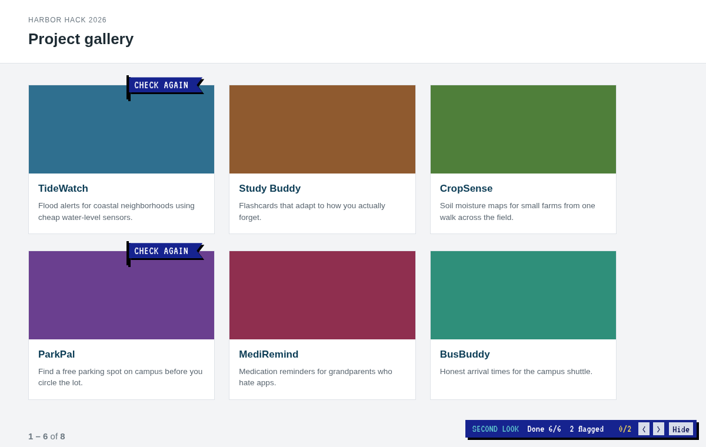
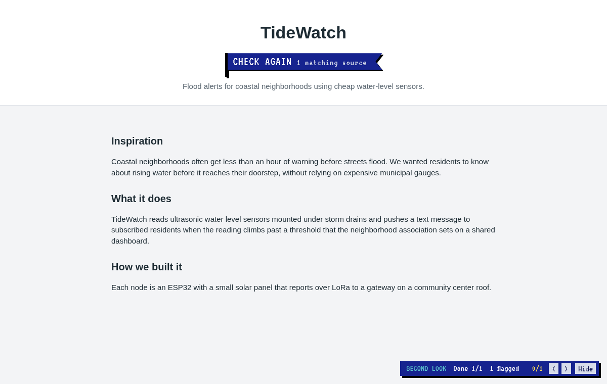
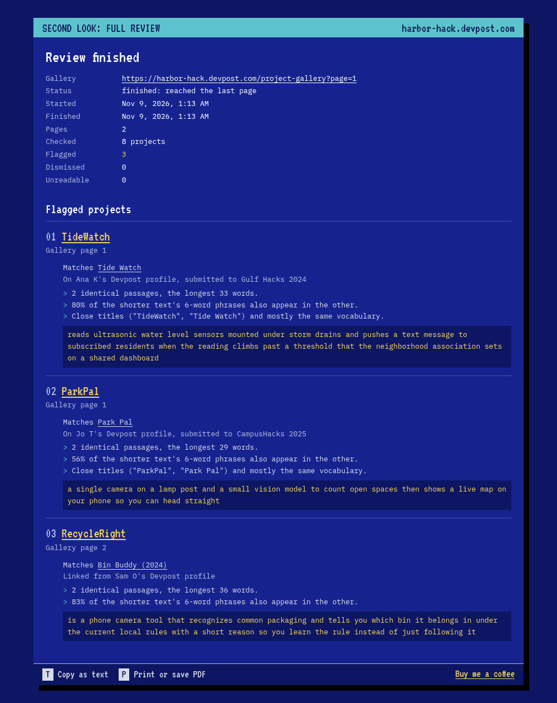
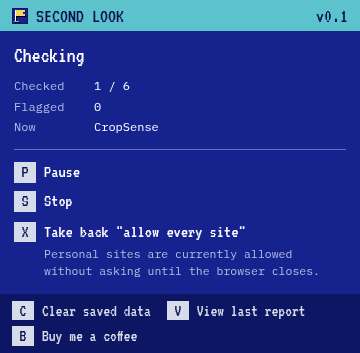

Second Look
A browser extension for hackathon judges. On a Devpost gallery it reads every project, then reads what each team member has posted before, and puts a CHECK AGAIN flag on projects whose write-up closely matches something older.
Judges get a few minutes per project. Nobody has time to open every member's profile and compare paragraphs by hand, and that's exactly where a project from last year, entered again under a new name, gets through. The extension does the reading. A person still makes the call. A flag means "open this one", and a match often has a dull explanation: a team reusing its own words, a template, or a resubmission the event allows.
1 A check, start to finish
This is one gallery page being checked, recorded in real time with no cuts. The hackathon is made up: "Harbor Hack 2026", its teams and their profiles are test pages served locally, so no real project or person appears here or anywhere on this page.
2 When it flags
Each write-up is cut into words and then into overlapping 6-word phrases. Two texts are compared by the phrases they share, and runs of shared phrases are joined back into identical passages. A project gets flagged when, against some older page, one of these holds:
| Rule | Threshold |
|---|---|
| long identical run | 20 or more words in a row |
| several passages | 3 or more shared runs of at least 8 words |
| phrase overlap | 20% of the shorter text's 6-word phrases appear in the other |
| renamed project | titles 70% alike and word-count vectors with cosine 0.55 or higher |
All of the numbers live in one frozen object, so tuning them is a one-line change and the tests catch whatever that breaks:
export const THRESHOLDS = Object.freeze({
shingle: 6,
minShingleContentWords: 3,
minContentWords: 25,
shortTextSpan: 15,
longSpan: 20,
multiSpanWords: 8,
multiSpanCount: 3,
containment: 0.2,
cosine: 0.55,
title: 0.7,
...
});A phrase only counts if at least 3 of its 6 words are content words, so "and we wanted to make it" doesn't match anything. Write-ups under 25 content words are too short for the overlap rules and only flag on a 15-word identical run.
A similar title never flags on its own. Neither does a shared idea. In the test suite, a member who built a student carpool app enters a Slack bot for office carpools; the titles are 62% alike, they share no 8-word run, and nothing gets flagged. Reusing an idea is normal.
3 Common wording
Devpost hands every team the same headings ("Inspiration", "What it does", "Challenges we ran into"), and half the gallery writes "we learned a lot about". Without a filter, those phrases would match everything. So the analyzer counts how many pages on the current gallery each phrase shows up on, and any phrase found on 3 or more is treated as common wording and left out of every comparison:
function remember(url, prepared) {
for (const key of prepared.shingles.keys()) {
let set = docFreq.get(key);
if (!set) docFreq.set(key, (set = new Set()));
set.add(url);
}
}
function genericKeys() {
const out = new Set();
for (const [key, urls] of docFreq) if (urls.size >= L.genericDocFreq) out.add(key);
return out;
}Two projects copying each other still match, because the copied text is on two pages, not three. A phrase that every team uses drops out by itself, and no stop list has to be kept up to date.
4 What a flag shows
A flag that just says "suspicious" is useless to a judge and unfair to the team. Each flag here opens the page it matched and how that page was found (which member's profile, or which personal site), when it was read, the hackathon it was submitted to, the reasons in plain words, and the identical passages side by side. If something couldn't be read (a robots.txt refusal, a timeout, Cloudflare) the panel says so instead of guessing.

0/2 < > counts flags across the whole
gallery and jumps to the next one, even on another page.
Key 2 checks every page of the gallery on its own: one page, a 2-second pause, Devpost's "next" link, and so on until the last page. At the end it opens a report that can be copied as text or saved as a PDF.


5 Rate limits
A 24-project gallery means 100 to 150 requests to Devpost, plus whatever personal
sites the teams link. The extension is a guest on those servers, so it goes slowly on
purpose. Every origin gets its own queue: requests to one site run one at a time, at least
1 second apart on Devpost and 2 seconds anywhere else. A 429 or
503 pushes the next request past Retry-After and doubles the gap
for that site, up to 8 times the normal one.
function schedule(origin, task) {
const prev = tails.get(origin) ?? Promise.resolve();
const run = prev
.catch(() => {})
.then(async () => {
const at = Math.max((lastStart.get(origin) ?? -Infinity) + gap(origin),
notBefore.get(origin) ?? -Infinity);
const wait = at - now();
if (wait > 0) await sleep(wait);
lastStart.set(origin, now());
return task();
});
tails.set(origin, run);
return run;
}Each origin's queue is a promise chain, and the .catch keeps one failed
request from stalling the ones behind it. The clock and sleep are passed in,
so the tests run it against a fake clock instead of waiting.
It also reads robots.txt before anything else on a site and skips the site
if it can't fetch it. There are hard caps too: 80 projects per page, 8 members per project,
3 profile links per member, 40 pages per full review, and 8000 requests per browser
session.
6 Untrusted pages
Every page the extension reads was written by a stranger, and the flags are drawn on top of a site whose scripts it doesn't control. Three rules follow from that:
- Fetched HTML goes through
DOMParserand only ever comes back out as text. Nothing from a fetched page is inserted as markup. - Requests go out without cookies or a referrer, so nothing behind the judge's Devpost login is read.
- Flags, the status bar and the evidence panel live in closed shadow roots, which Devpost's own scripts can't reach into or restyle.
const res = await fetchImpl(url, {
credentials: 'omit',
redirect: 'follow',
referrerPolicy: 'no-referrer',
signal: controller.signal,
headers: { Accept: accept },
});There's no server behind it, no analytics, and no account. The only thing written to disk is a dismissal: the project URL, the matching sources, the judge's note and the time. Results and reports last until the browser closes.
Site access is optional and asked for when it's needed. Devpost access is requested on the first check. Personal sites are asked about one batch at a time in a small window, with a key to allow them, a key to skip them, and a key to allow every site until the browser closes. That last grant is removed on the next start.
7 Running it
It isn't on the Chrome Web Store or addons.mozilla.org. For Chrome, Edge or Brave,
download
second-look-chrome.zip,
unzip it, turn on Developer mode in chrome://extensions and pick the folder
with Load unpacked. Firefox and Zen need a build from source for now:
git clone https://github.com/YatoVoid/second-look.git
cd second-look
npm install
npm run build # dist/chrome and dist/firefox
npm test # node:test on synthetic pages, no networkThen load dist/firefox/manifest.json from
about:debugging#/runtime/this-firefox.
| Key | Action |
|---|---|
| 1 | check this page |
| 2 | check every page of this gallery, then open a report |
| P R S | pause, resume, stop |
| Esc H D | on a flag: close, hide for the session, dismiss with a note |
| C | clear saved data (press twice) |
| File | What's in it |
|---|---|
src/lib/similarity.js | the flag rules and the reasons they print |
src/lib/analyzer.js | per-project pipeline, common wording, limits |
src/lib/extract.js | Devpost and personal-site parsing |
src/lib/fetcher.js | robots.txt, retries, request budget, cache |
src/background.js | queue, permissions, saved results, full reviews |
src/content/ | flags, status bar, evidence panel |
8 Limits
- It compares wording only. Copied code, a reused demo video or the same screenshots won't flag.
- It can't tell which text came first. The evidence names the hackathon the older page was entered in, and the judge checks the dates.
- It depends on Devpost's current markup. After a redesign it reports "layout not
recognized" until
extract.jsis updated. - If Cloudflare challenges a request, that page counts as unreadable. The extension doesn't try to get past the check.
- Only the first page of each member's Devpost projects is read.
- Firefox has no signed download yet.
The interface uses VT323 and IBM Plex Mono, both under the SIL Open Font License, and the icon is drawn on a 16×16 grid by a script in the repo.